课程回放
- geovbox@哔哩哔哩 https://www.bilibili.com/video/BV1st4y1C7b5?p=3
腾讯会议（已结束）
- 课程时间：2020/06/05 19:00-20:30
- 点击链接入会：https://meeting.tencent.com/s/QmMCiJSHewVj
- 会议 ID：731 904 875
课程简介（共3个报告）
本节课邀请了南京大学研究生徐雯峤和浙江大学研究生辛文讲解他们发表在《地质学报》上研究成果。
应用：基于离散元的构造模拟
- 主讲人：李长圣
- 内容简要：
- 褶皱冲断构造主控因素
- 双滑脱层的挤压构造：库车
- 深浅构造耦合及多期构造叠加：塔西南
库车坳陷东西段盐下构造变形差异演化数值模拟分析
- 主讲人：徐雯峤
- 内容简要：
- 库车坳陷区域地质概况
- 东西分段
- 南北分带
- 上下分层
- 初始模型设置：
- 实验1：无先存断层-无同构造沉积模型；
- 实验2：弱内聚力滑脱层初始模型；
- 实验3：无先存断层-同构造沉积模型；
- 实验4：先存断层-同构造沉积模型；
- 实验5：强盐岩层模型。
- 模拟结果及分析：
- 先存断裂会影响褶皱冲断带构造传播的方式，造成盐下楔体的形态、断裂数量和盐上构造样式的差异；
- 同构造沉积和差异滑脱层性质主要影响含盐褶皱冲断带垂向分层解耦合变形的程度，同构造沉积会增强盐上和盐下的解耦合变形，滑脱层性质增强会减弱盐上和盐下的解耦合变形。
- 库车坳陷区域地质概况
基于离散元数值模拟的西南天山山前冲断带构造变形控制因素研究
- 主讲人：辛文
- 内容简要：
- 地质背景介绍：新疆喀什地区西北缘褶皱冲断带分布图和测线位置。
- 初始模型设置：
- 实验1：先存断裂初始模型；
- 实验2：弱内聚力滑脱层初始模型；
- 实验3：先存断裂-弱内聚力滑脱层初始模型；
- 实验4：先存断裂-中等内聚力滑脱层初始模型；
- 实验5：先存断裂-强内聚力滑脱层初始模型。
- 模拟结果及分析：
- 先存断裂和滑脱层对冲断带构造变形的影响；
- 滑脱层强度对研究区构造变形的影响。
本次课程为中国石油勘探开发研究院管树巍专家和中国地质大学（北京）能源学院何登发教授推荐开设，共三节课
- 第一节 理论：构造模拟与离散元（第一周）
- 第二节 软件：VBOX简介与操作演示（第二周）
- 第三节 应用：基于离散元的构造模拟（第三周）
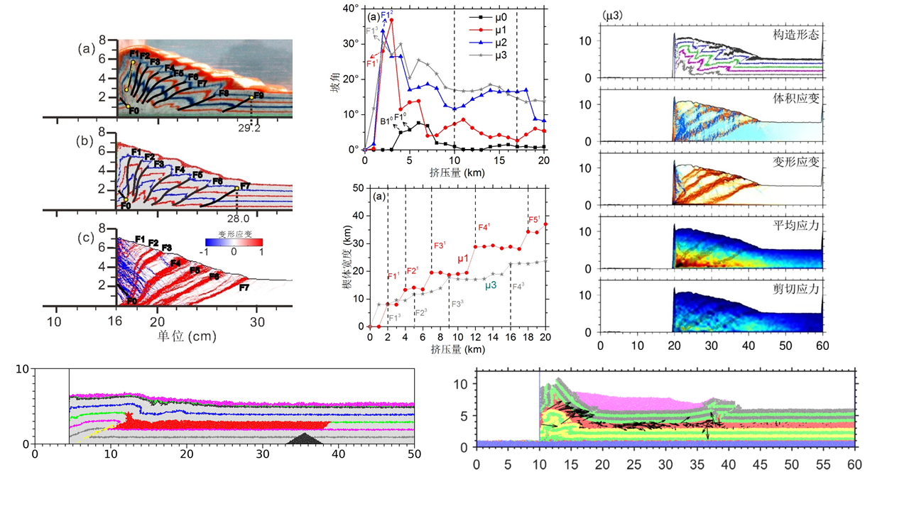 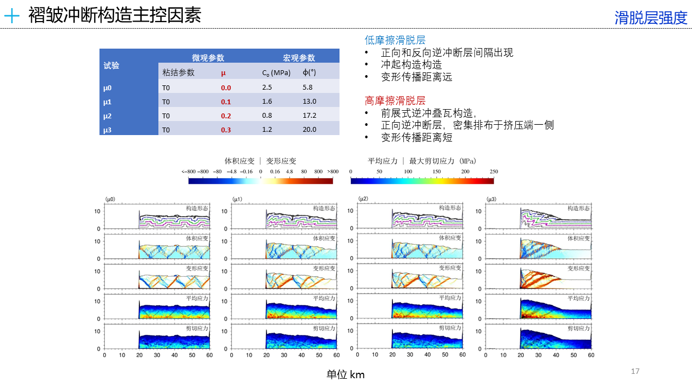 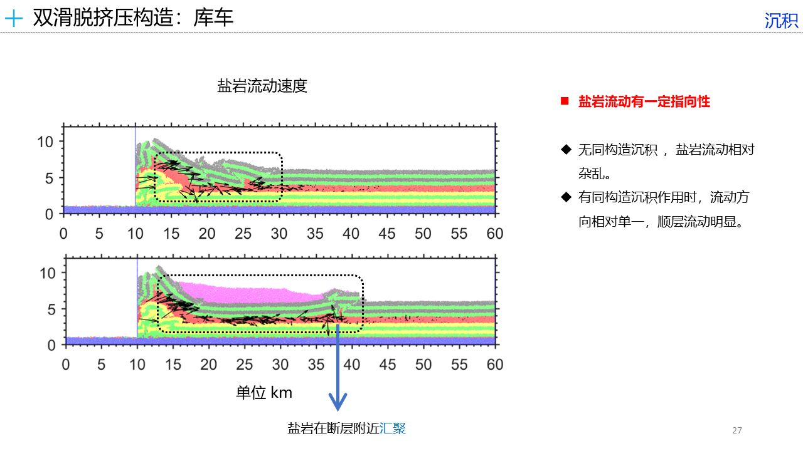 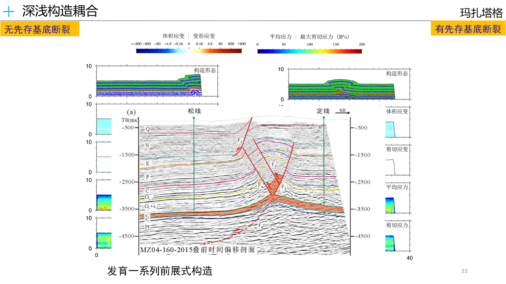 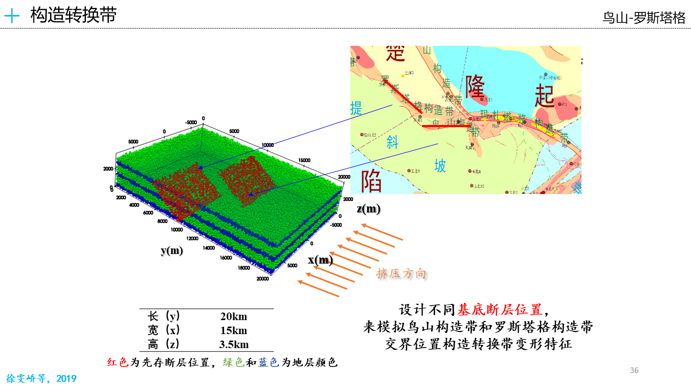 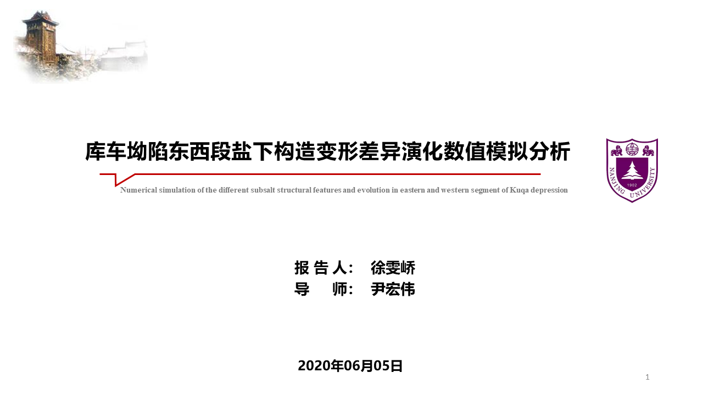 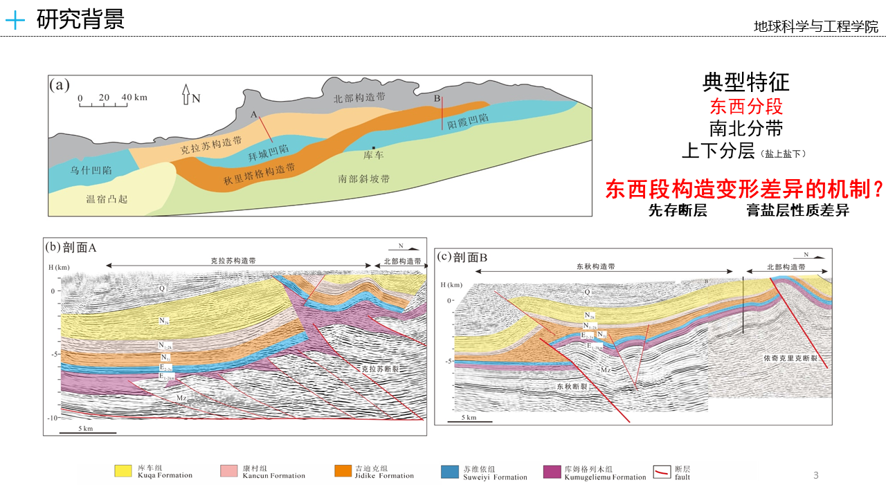 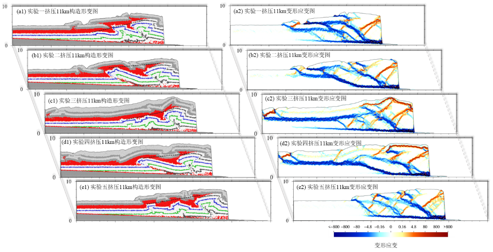 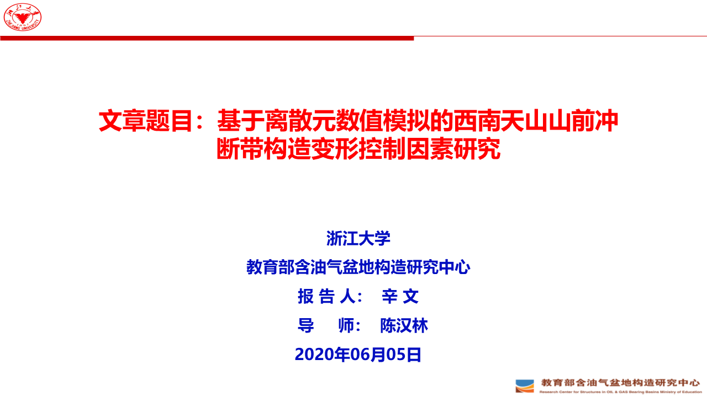 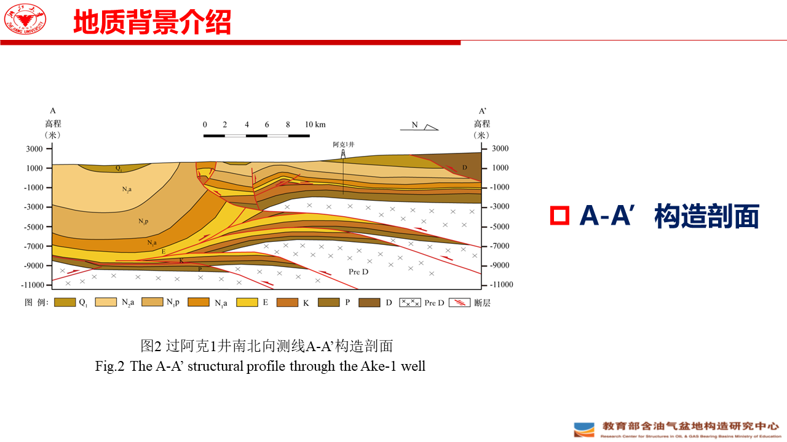 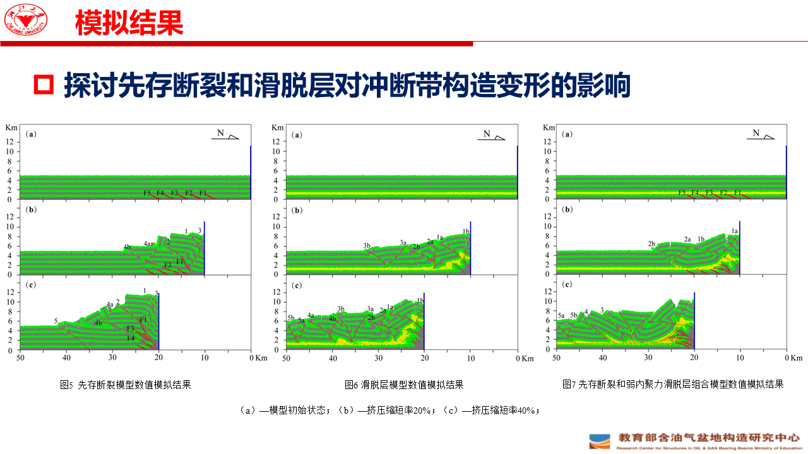 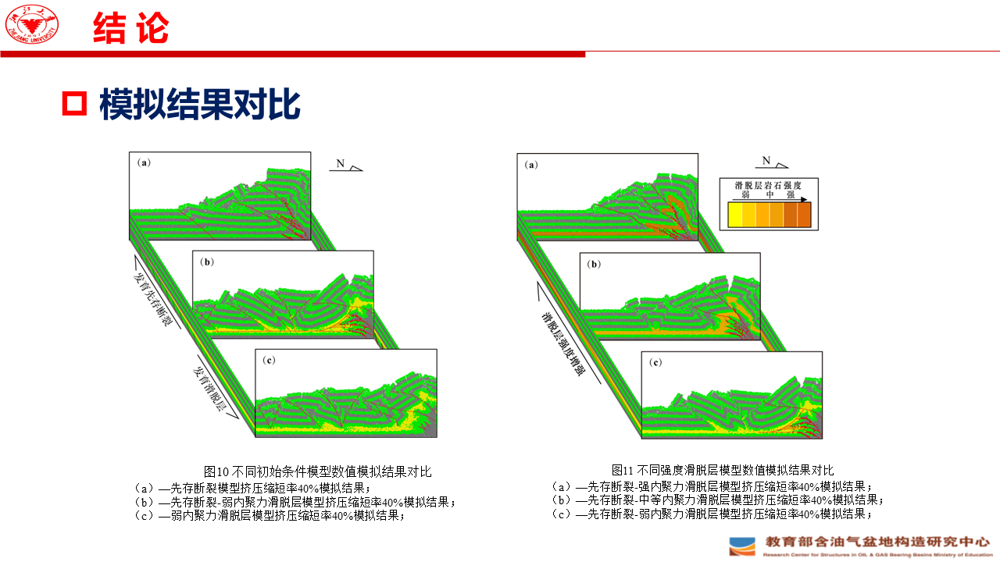应用：基于离散元的构造模拟 部分内容
库车坳陷东西段盐下构造变形差异演化数值模拟分析 部分内容
基于离散元数值模拟的西南天山山前冲断带构造变形控制因素研究 部分内容